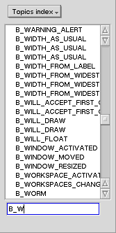

Az elsõ dolog amire szükség van, egy könyv megnyitása.
Ehhez a könyv menüben szükséges kiválasztani egyet
a az ott lévõ elemek közül. A könyv bevezetõje
vagy összegzése megjelenik az ablakban és bal oldalon megjelenik
a BeHappy irányítópultja.

A felsõ menübõl kiválaszthatja, milyen indexelés alapján rendezze a tartalomjegyzéket. A BeBook-kal 4 index alapján lehet:
| Egyszerû lista Csak válasszon egy elemet a listáról. |
Dupla lista Válsszon egy elemet a felsõ listáról, ami részletesebben jelenik meg az alsó listán. Az alsó listáról történõ választás után megjelenik a megfelelõ szöveg az ablakban. |
Lista |
"Tartalmazza" opció Ha ez az opció ki van választva, akkor minden megjelenik, ami tartalmazza a keresett szöveget.. |
 |
 |
 |  |
| Néha láthat egy 'Következõ' gombot. Ez megpróbálja megkeresni máshol is az elemet ami a felsõ listában ki lett jelõlve. Ez nagyon hasznos azoknál az osztályoknál ahol több szülõje is van egy osztálynak. |